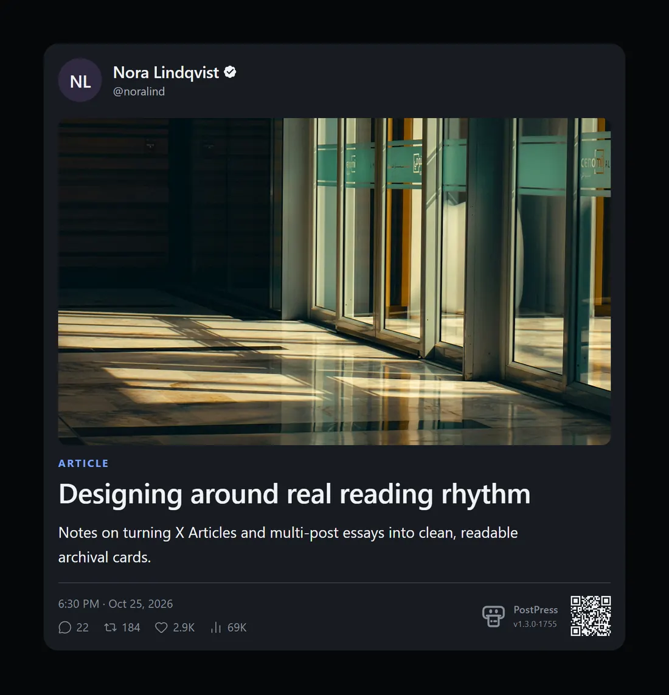

Dispense recortes manuais e prints de tela. Clique no botão do post (ou pressione Alt + C) para copiar um post único ou thread do mesmo autor como um cartão 3× nítido direto para a área de transferência. Doze estilos, renderizados inteiramente no seu computador.
Meia-noiteFundo escuro com letra clara, confortável à noite.
Threads se conectam sozinhas.
Posts de uma mesma thread são unidos por autor e horário, filtrando anúncios e respostas aleatórias. Dois caminhos: primeiro o cache GraphQL do próprio X e, se vazio, o DOM renderizado. Qualquer post indesejado sai com um clique.
Três posts do mesmo autor, um deles com citação: o cartão completo como é exportado.
Posts
3
Fotos
2
Citação
1
Exportação
1472 × 2854
Posts consecutivos do mesmo autor são unidos; anúncios e respostas de terceiros ficam de fora
Threads longas exportam em 2× por padrão, abaixo do limite de tamanho
Quando o cartão ficaria pequeno demais no feed, o painel avisa antes de exportar
Como tirar print de um tweet sem poluição visual
Quase todo mundo tira print de um tweet para compartilhar uma ideia em apresentação, newsletter ou chat—e acaba levando respostas, barras laterais e texto borrado. Há três formas comuns de transformar um tweet em imagem, cada uma com uma contrapartida clara.
Print no celular
Aperte os botões físicos no iOS ou Android e depois recorte barra de status, ícones e a primeira resposta logo abaixo. É rápido para um post curto, mas o preço é resolução presa à tela, margens irregulares e nenhum jeito limpo de capturar uma thread longa sem emendar vários prints à mão.
Captura de área no navegador
Use a ferramenta de captura do sistema ou um atalho do navegador para desenhar um retângulo ao redor do post no desktop. Você ganha um pouco mais de controle que no celular, mas ainda depende do DPI do monitor, elementos do navegador ou estado de hover, tendo que recortar tudo de novo quando uma citação ou grade encosta na borda.
Renderizar o post como cartão
Em vez de fotografar pixels da tela, o texto, as mídias e a estrutura da thread são lidos e diagramados do zero em uma tela limpa. A contrapartida das ferramentas web comuns é precisar colar a URL em um servidor terceiro, esperar APIs limitadas ou aceitar marcas d’água e threads quebradas.
O PostPress leva essa terceira abordagem inteiramente para dentro do seu navegador: clique no botão de cartão em qualquer post do X (ou pressione Alt + C), escolha um estilo e copie um PNG 3× nítido direto para a área de transferência—com respostas e anúncios filtrados, sem servidor e sem login.
Um tweet renderizado localmente no estilo Meia-noite—sem moldura do navegador, sem respostas perdidas.
Artigos, citações e grades de imagem ficam intactos.

Um Artigo do X traz capa e abertura; um post citado é preenchido ou contornado conforme o estilo; de uma a vinte fotos mantêm suas proporções na grade, quatro por linha após as quatro primeiras (Preencher recorta em quadrado).
“Não é um filtro — é papel, filete e tipografia na proporção certa.”
ArtigoCapa, chapéu, título e abertura vêm juntos.
CitaçãoPreenchida ou contornada, seguindo o estilo.
ImagensDe uma a vinte mantêm suas proporções sem recorte quadrado; quatro por linha a partir da quinta, exceto no modo Preencher.
Oito chaves, um único Studio.
Estilo, formato, fundo, rodapé, desfoque do autor e resolução vivem neste mesmo painel Studio; altere um item e a prévia ao vivo acompanha na hora. Suas escolhas ficam salvas para você apenas abrir e clicar em Copiar no dia a dia.
O modal Studio real: prévia à esquerda e controles à direita sincronizados ao vivo.
Tudo ligadoQR, métricas, hora, crédito.Sem rodapéSó o texto.DesfocadoAutor e autor citado juntos.
Roda na sua máquina, de ponta a ponta.
Sem conta, sem servidor, sem telemetria. A diagramação acontece dentro de um Shadow DOM isolado e a exportação é desenhada pelo próprio canvas do navegador. Além de buscar as imagens já presentes no cartão nos servidores do X, nada sai do seu computador.
Não lê sua timeline, não precisa de conta no X nem de API do X. Sem vínculo com a X Corp.
clipboardWriteColoca a imagem final na área de transferência somente quando você clica em Copiar.
storageLembra seu estilo, formato e chaves; salvo localmente.
*.twimg.comBusca as imagens do cartão. Um canvas não consegue ler imagens cross-origin sem isso.
No seu navegador.
Instale pela Chrome Web Store em um clique ou expanda abaixo os três passos para compilar do código-fonte.
Distribuído sob GPL-3.0-or-later: redistribua suas alterações sob a mesma licença.
Para desenvolvedores: compilar do código-fonte (3 passos)
Compilar
Clone o repositório, instale as dependências e compile. A saída vai para dist/.
Carregar
Abra chrome://extensions, ative o modo do desenvolvedor, clique em Carregar sem compactação e escolha a pasta dist/.
Usar
Clique no botão do cartão em qualquer post (ou passe o mouse e aperte Alt + C), clique em Copiar imagem e cole onde quiser.
git clone https://github.com/Shirolin/postpress.git
cd postpress
pnpm install
pnpm run build # → dist/
Perguntas frequentes
Oito perguntas reais, respostas ao lado.
Por que não apenas tirar um print?
Recortar prints à mão significa desviar de respostas, juntar threads longas em várias capturas e se contentar com o DPI da tela e a barra do navegador. Um clique no PostPress diagrama o post ou thread inteira seguindo o estilo escolhido e coloca uma imagem 3× nítida na área de transferência.
Um cartão longo fica borrado no feed?
Um post único exporta em 3×. Uma thread muito longa usa 2× por padrão para ficar abaixo do limite de tamanho; quando ficar pequena demais para leitura, o painel avisa e sugere dividir. Há uma opção global de 3× nas configurações de exportação.
Preciso fazer login ou conectar o X?
Não. Não existe sistema de contas: a extensão lê apenas o que a página à sua frente já renderizou e nunca toca em credenciais.
Alguma coisa é enviada para a nuvem?
Não. A imagem vai para a área de transferência e para o seu disco; fechar a prévia libera o restante. Nenhum conteúdo de post é armazenado.
Posso usar comercialmente?
O software usa licença GPL-3.0-or-later e é livre para uso comercial. Textos e imagens dentro do cartão continuam pertencendo aos autores originais; verifique antes de redistribuir.
Em quais navegadores funciona?
Chrome e Edge, a partir do Chrome 111 (Manifest V3). Firefox e Safari ainda não são compatíveis: a extensão usa APIs de extensão do Chromium.
Como tirar print de um tweet sem as respostas?
Clique no botão de cartão do PostPress no post (ou passe o mouse e pressione Alt + C). O PostPress lê apenas aquele post—ou posts consecutivos do mesmo autor em uma thread—e deixa anúncios e respostas de terceiros de fora automaticamente. Se quiser omitir algum post da thread, exclua com um clique antes de copiar.
Consigo transformar um tweet em PNG?
Sim. O PostPress renderiza o cartão localmente no navegador e copia um PNG 3× direto para a área de transferência (ou baixa o arquivo PNG para o disco). Threads muito longas usam 2× por padrão para respeitar o limite de tamanho, com opção de 3× nas configurações de exportação.
Seu próximo post merece papel.
Instale uma vez e ele fica na barra de ações de todo post. Um clique para a área de transferência, pronto para colar em qualquer lugar.